Simulation H13060 Example
%load_ext autoreload
%autoreload 2
import sys
import os
# Automatically locate your active Miniconda environment's plugin directory
conda_prefix = os.environ.get("CONDA_PREFIX")
if conda_prefix:
# On Windows, Conda puts plugin DLLs in Library\bin\gdalplugins
plugin_path = os.path.join(conda_prefix, "Library", "lib", "gdalplugins")
os.environ["GDAL_DRIVER_PATH"] = plugin_path
# Append the main bin directory to the system PATH so dependencies load
os.environ["PATH"] = os.path.join(conda_prefix, "Library", "lib") + os.pathsep + os.environ["PATH"]
from nbs_uncles import (
read_file, show_depth,
build_coverage_mask,
compute_local_orientation,
undo_rotation,
detect_trackline_positions,
assign_depths_to_lines,
build_uncertainty_raster,
)
# scikit-image functions used directly in notebook cells
from skimage.morphology import opening, thin, disk
import numpy as np
import matplotlib.pyplot as plt
Trackline Detection
This notebook detects and extracts individual survey tracklines from a bathymetric raster by exploiting the linear spatial structure left by vessel survey passes.
Overall pipeline:
Load the BAG raster
Build a binary coverage mask.
Apply morphological filtering to suppress blob-like dense coverage patches, leaving only thin linear trackline structures.
Skeletonise the filtered image to single-pixel-width lines.
Use the Radon transform to identify the dominant line orientations (angle peaks).
Compute local angle orientation of points using PCA
Iteratively extract line families: for each dominant angle, rotate the original bathymetry to align it to the vertical axis and sample the points that intersect with the vertical lines defined by the angle peaks
For each extracted family, assign real depth values based on original data
With each extracted family now consisting of parallel lines, we can process pairs of lines iteratively
For each pair of lines:
Interpolated bathymetry values of there are gaps within the lines
Compute the uncertainty for each line in the pair using the spectral energy using distance between the pair of lines as “linespacing”
Divide each line into subsegments with lengths equal to linespacing and apply spectral energy computation on each subsegment resulting to 2D array of spectral energies
Place the computed 2D arrays to the space between the line pairs
After processing all line pairs:
Rotate the resulting raster back to its original orientation (negative of dominant angle)
Plot the resulting raster
Load the BAG raster
Load the BAG (Bathymetric Attributed Grid) raster file. The result is a dict containing the raw 2D depth array and metadata (geotransform, resolution, no-data value). No-data values are not masked on load — they are handled explicitly in subsequent steps.
fn = r"../data/raster/H13060_MB_4m_MLLW_3of3.bag"
bathy_data = read_file(fn, verbose=True)
# Visualize the loaded bathymetric data
show_depth(bathy_data, cmap='viridis')
File '../data/raster/H13060_MB_4m_MLLW_3of3.bag' read successfully.
Data shape: 2362 rows x 6506 columns
No-data value: 1000000.0
Resolution: 4.0 m/pixel
Geotransform values-->
Origin x-coordinate: 302698.0
Pixel width: 4.0
Row rotation: 0.0
Origin y-coordinate: 3361470.0
Column rotation: 0.0
Pixel height: -4.0
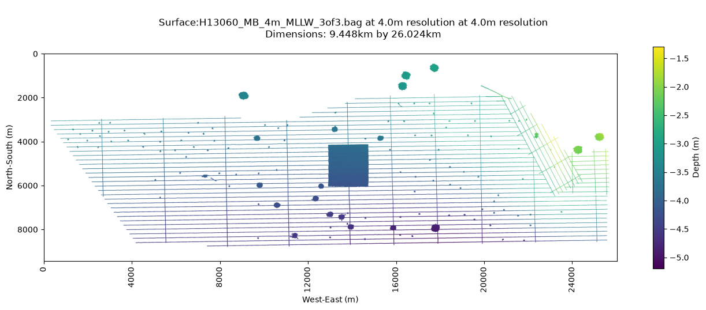
Build a binary coverage mask
bathy_binary = build_coverage_mask(bathy_data)
plt.figure(figsize=(10, 8))
plt.imshow(1 - bathy_binary, cmap='gray')
plt.colorbar(label='Valid Depth Data (1) vs No Data (0)')
plt.title("Binary Mask of Valid Depth Data")
plt.show()
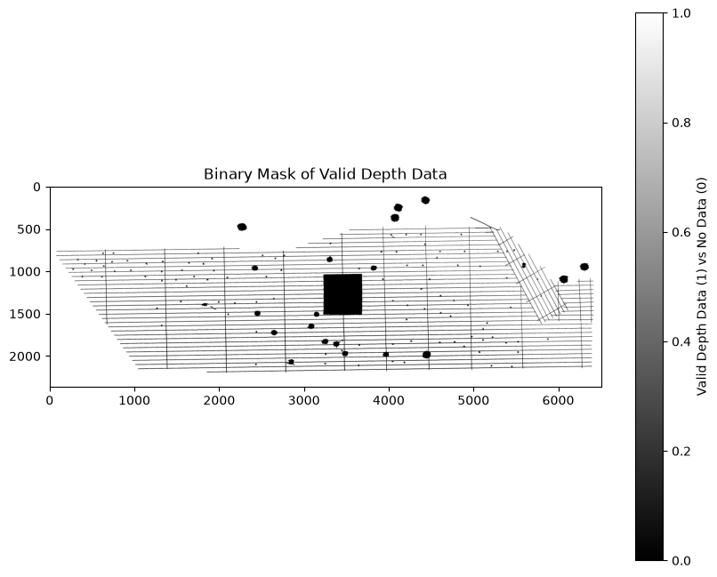
Apply morphological filtering to suppress blob-like patches
Skeletonise the filtered image to single-pixel-width lines
# Apply morphological thinning to the binary mask
# Remove blob-like structures while preserving the skeleton of valid data
bathy_blobs = opening(bathy_binary, disk(5)) # Remove small blobs
bathy_lines = bathy_binary & ~bathy_blobs # Keep only the line-like structures
bathy_thin = thin(bathy_lines) > 0
plt.figure(figsize=(10, 8))
plt.imshow(1 - bathy_thin, cmap='gray')
plt.title("Thinned Binary Mask")
plt.colorbar(label='Intensity', shrink=0.5)
plt.show()
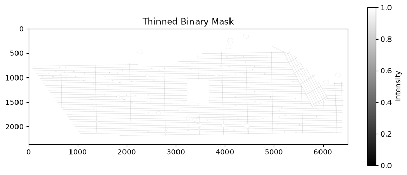
Use the Radon transform to identify the dominant line orientations (angles).
# Run the Radon transform over the full skeleton to identify the single most
# prominent orientation. The variance profile peaks at angles where projections
# are concentrated — characteristic of linear features aligned with that angle.
dominant_orientations = compute_dominant_angle_radon_transform(
bathy_thin, plot_profile_variance=True, circle=False
)
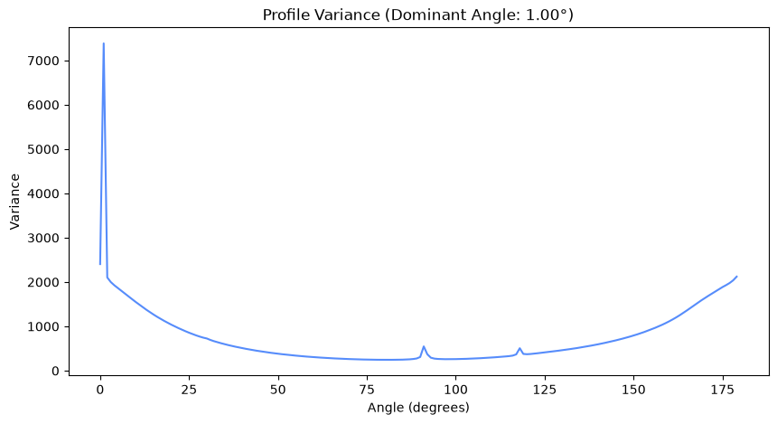
print(f"Dominant Orientations: {dominant_orientations['peaks']}")
Dominant Orientations: [ 1 91 118]
Compute local angle orientation of points using PCA
local_orientations = compute_local_orientation(
binary_image=bathy_thin,
line_length=50,
num_neighbors=20,
plot_orientation=True,
cmap = 'viridis',
figsize=(32, 16)
)
100%|██████████| 190761/190761 [02:14<00:00, 1417.92it/s]
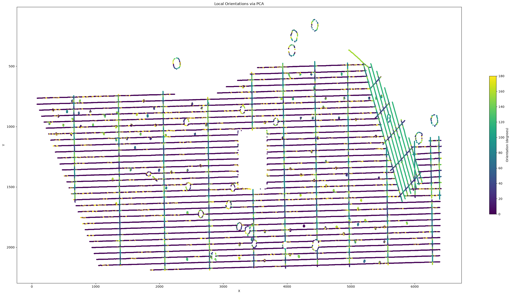
# Compute histogram of local orientations
plt.figure(figsize=(10, 6))
min_angle = np.nanmin(local_orientations)
max_angle = np.nanmax(local_orientations)
plt.hist(local_orientations[~np.isnan(local_orientations)].flatten(), bins=180, range=(min_angle, max_angle), color='blue', alpha=0.7)
plt.title("Histogram of Local Orientations")
plt.xlabel("Orientation (degrees)")
plt.ylabel("Frequency")
plt.xlim(min_angle, max_angle)
plt.grid(True)
plt.show()
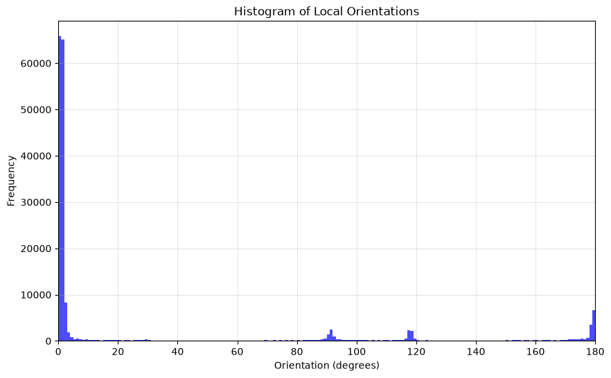
Iteratively extract line families: for each dominant angle, rotate the original bathymetry to align it to the vertical axis and sample the points that intersect with the vertical lines defined by the angle peaks
TARGET_ANGLES = dominant_orientations['peaks']
# Override detected TARGET_ANGLES as necessary
TARGET_ANGLES = [1, 91, 118]
# Use 10% of longest dimension as the minimum line length
# this is a heuristic that captures the scale of features we expect to see
# Adjust as needed for different datasets.
min_line_pct = 0.02
min_line_length = int(min_line_pct * max(bathy_thin.shape))
print(f"Using min_line_length = {min_line_length} pixels "
f"({min_line_pct*100:.1f}% of max dimension)")
if len(TARGET_ANGLES) > 1:
angle_search_window = int(np.floor(np.min(np.diff(TARGET_ANGLES))) - 1) // 2
TOLERANCE = angle_search_window # degrees of tolerance around each target angle
TOLERANCE = min(TOLERANCE, 5) # Ensure at least 5 degrees of tolerance
else:
TOLERANCE = 5
angle_colors = plt.cm.viridis(np.linspace(0, 1, len(TARGET_ANGLES)))
angles_rasters = {}
for i, angle in enumerate(TARGET_ANGLES):
print(f"Extracting lines around {angle}° ± {TOLERANCE}°")
# Extract lines near this angle
low_bound = (angle - TOLERANCE) % 180
high_bound = (angle + TOLERANCE) % 180
print(f" Angle range: {low_bound:.1f}° to {high_bound:.1f}°")
# Create a mask of pixels whose local orientation falls within this range
if low_bound < high_bound:
range_condition = np.logical_and(local_orientations >= low_bound,
local_orientations < high_bound,
~np.isnan(local_orientations))
else:
range_condition = np.logical_or(local_orientations >= low_bound,
local_orientations < high_bound,
~np.isnan(local_orientations))
angles_rasters[angle] = range_condition
plt.figure(figsize=(30, 30))
plt.imshow(1 - range_condition.astype(bool), cmap='gray')
plt.title(f"Lines near {angle}° ± {TOLERANCE}°")
plt.show()
Using min_line_length = 130 pixels (2.0% of max dimension)
Extracting lines around 1° ± 5°
Angle range: 176.0° to 6.0°
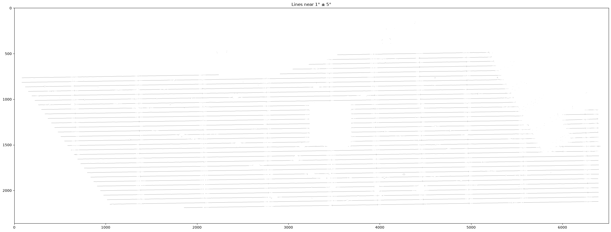
Extracting lines around 91° ± 5°
Angle range: 86.0° to 96.0°
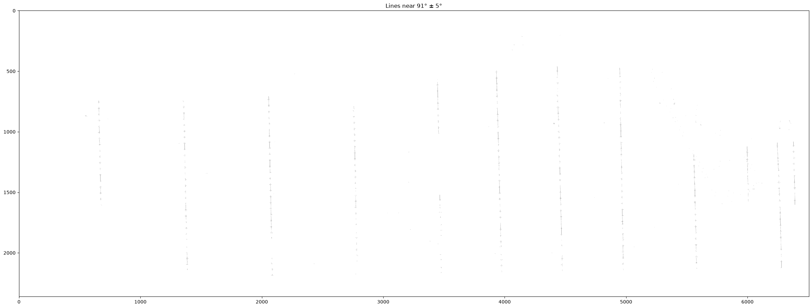
Extracting lines around 118° ± 5°
Angle range: 113.0° to 123.0°
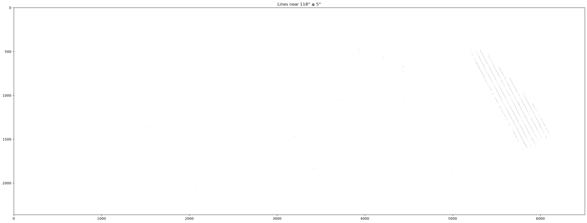
For each extracted family, assign real depth values based on original data
With each extracted family now consisting of parallel lines, we can process pairs of lines iteratively
For each pair of lines:
Interpolated bathymetry values of there are gaps within the lines
Compute the uncertainty for each line in the pair using the spectral energy using distance between the pair of lines as “linespacing”
Divide each line into subsegments with lengths equal to linespacing and apply spectral energy computation on each subsegment resulting to 2D array of spectral energies
Place the computed 2D arrays to the space between the line pairs
After processing all line pairs:
Rotate the resulting raster back to its original orientation (negative of dominant angle)
Plot the resulting raster
min_line_factor = 0.1 # fraction of max projection height used as the peak threshold
band_width = 40 # minimum column separation between adjacent detected peaks (pixels)
uncertainty_results = {} # keyed by angle — stores the final uncertainty raster per family
for angle in TARGET_ANGLES:
current_mask = angles_rasters[angle]
# --- Steps 7–8: Detect trackline positions and build the clean line mask ---
peaks, restored_mask, angle_to_rotate = detect_trackline_positions(
angle_mask=current_mask,
bathy_binary=bathy_binary,
angle=angle,
min_line_factor=min_line_factor,
band_width=band_width,
)
print(f"Angle {angle}°: detected {len(peaks)} tracklines at columns {peaks}")
# Plot restored mask
plt.figure(figsize=(10, 8))
plt.imshow(1 - restored_mask, cmap='gray')
plt.title("Single Line Trackline Mask")
# Assign real depth values from bathy_data to each detected line pixel
current_depth_raster = assign_depths_to_lines(
restored_mask=restored_mask,
bathy_binary=bathy_binary,
bathy_data=bathy_data,
angle_to_rotate=angle_to_rotate,
)
# --- Steps 9–12: Process all adjacent line pairs → uncertainty raster ---
uncertainty_raster = build_uncertainty_raster(
peaks=peaks,
restored_mask=restored_mask,
current_depth_raster=current_depth_raster,
resolution=bathy_data['metadata']['resolution'],
)
# --- Step 13: Rotate uncertainty raster back to original orientation ---
uncertainty_original = undo_rotation(
raster=uncertainty_raster,
angle_to_rotate=angle_to_rotate,
original_shape=current_mask.shape,
)
uncertainty_results[angle] = uncertainty_original
# --- Step 14: Plot ---
plt.figure(figsize=(20, 15))
plt.imshow(uncertainty_original, cmap='viridis')
plt.colorbar(label='Uncertainty (m)', shrink=0.5)
plt.title(f'Interpolation Uncertainty — Angle {angle}°')
plt.show()
Angle 1°: detected 34 tracklines at columns [ 575 629 674 724 774 822 869 923 968 1018 1073 1122 1170 1226
1276 1328 1377 1426 1476 1528 1578 1623 1678 1729 1774 1824 1880 1930
1977 2030 2080 2121 2170 2222]
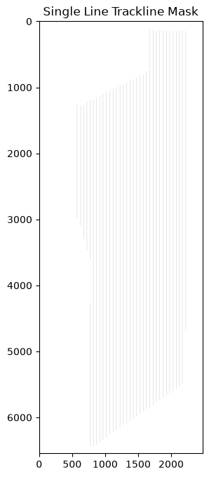
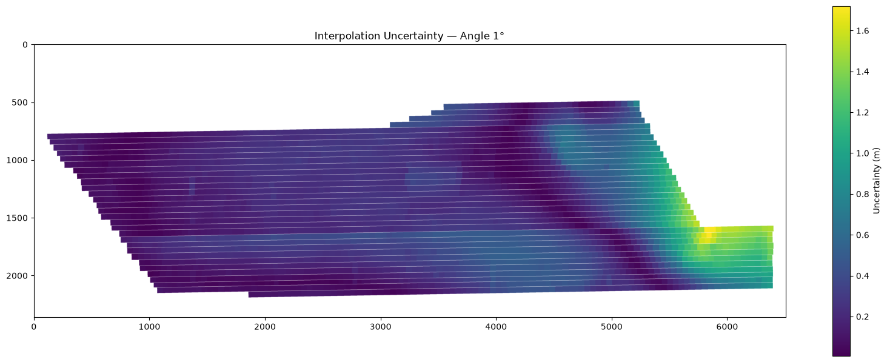
Angle 91°: detected 12 tracklines at columns [ 685 1386 2086 2787 3478 3965 4476 4981 5581 6018 6281 6404]
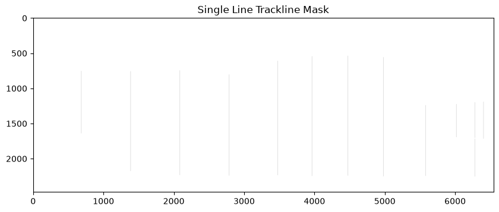
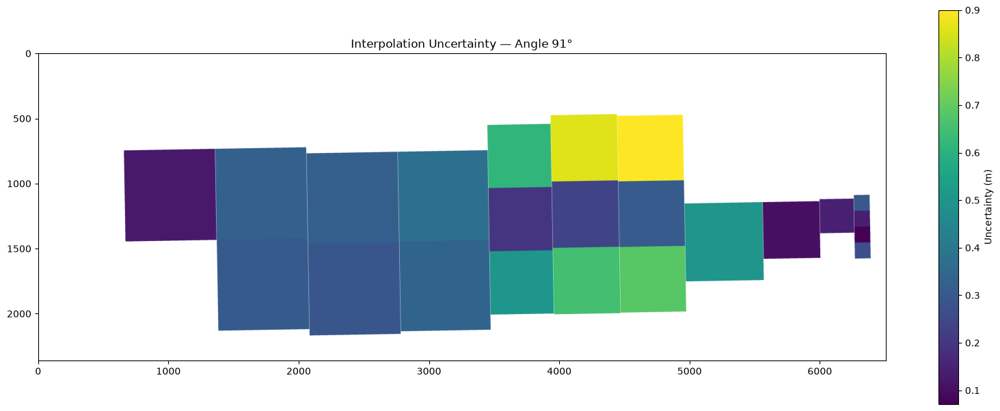
Angle 118°: detected 7 tracklines at columns [5470 5524 5574 5626 5672 5723 5774]
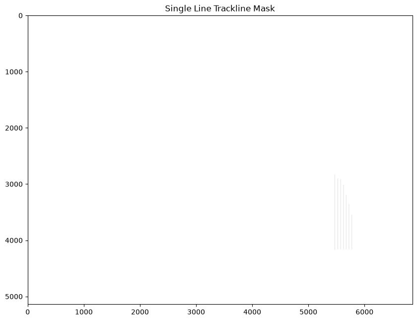
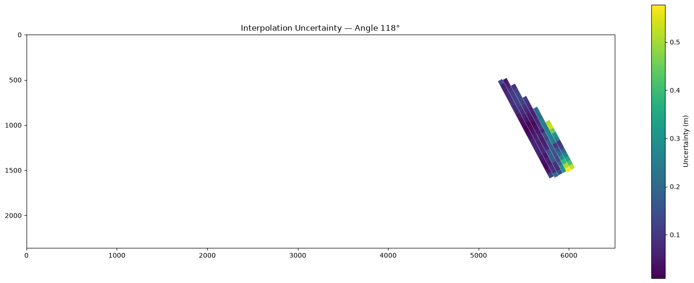
## ── Method comparison ────────────────────────────────────────────────────────
# Run the pipeline for every spectral method in compute_uncertainty and display
# the resulting uncertainty rasters side-by-side so the effect of each method
# on the uncertainty estimate can be assessed visually.
#
# Strategy:
# - detect_trackline_positions + assign_depths_to_lines are method-independent
# (pure geometry + depth lookup), so we compute them ONCE per angle and cache.
# - build_uncertainty_raster is then run for each method — fast because it
# only redoes the FFT step.
METHODS = ['amplitude', 'psd', 'psd_n', 'psd_df']
# --- Step A: Cache geometry + depth for each angle (run once) ---
angle_cache = {}
for angle in TARGET_ANGLES:
current_mask = angles_rasters[angle]
peaks, restored_mask, angle_to_rotate = detect_trackline_positions(
angle_mask=current_mask,
bathy_binary=bathy_binary,
angle=angle,
min_line_factor=min_line_factor,
band_width=band_width,
)
current_depth_raster = assign_depths_to_lines(
restored_mask=restored_mask,
bathy_binary=bathy_binary,
bathy_data=bathy_data,
angle_to_rotate=angle_to_rotate,
)
angle_cache[angle] = dict(
current_mask=current_mask,
peaks=peaks,
restored_mask=restored_mask,
angle_to_rotate=angle_to_rotate,
current_depth_raster=current_depth_raster,
)
# --- Step B: Loop over methods and plot a row of subplots per angle ---
resolution = bathy_data['metadata']['resolution']
for angle, cache in angle_cache.items():
n_methods = len(METHODS)
fig, axes = plt.subplots(n_methods, 1, figsize=(10, 5 * n_methods),
constrained_layout=True)
fig.suptitle(f'Uncertainty method comparison — Angle {angle}°', fontsize=14)
for ax, method in zip(axes.flatten(), METHODS):
print(f"Processing angle {angle}° with method '{method}' with ax {ax}...")
uncertainty_raster = build_uncertainty_raster(
peaks=cache['peaks'],
restored_mask=cache['restored_mask'],
current_depth_raster=cache['current_depth_raster'],
resolution=resolution,
method=method,
)
uncertainty_original = undo_rotation(
raster=uncertainty_raster,
angle_to_rotate=cache['angle_to_rotate'],
original_shape=cache['current_mask'].shape,
)
im = ax.imshow(uncertainty_original, cmap='viridis')
ax.set_title(method, fontsize=11)
ax.axis('off')
plt.colorbar(im, ax=ax, shrink=0.6,
label='m' if method != 'amplitude' else 'm/√Hz')
plt.show()
Processing angle 1° with method 'amplitude' with ax Axes(0.125,0.712609;0.775x0.167391)...
Processing angle 1° with method 'psd' with ax Axes(0.125,0.511739;0.775x0.167391)...
Processing angle 1° with method 'psd_n' with ax Axes(0.125,0.31087;0.775x0.167391)...
Processing angle 1° with method 'psd_df' with ax Axes(0.125,0.11;0.775x0.167391)...
Processing angle 91° with method 'amplitude' with ax Axes(0.125,0.712609;0.775x0.167391)...
Processing angle 91° with method 'psd' with ax Axes(0.125,0.511739;0.775x0.167391)...
Processing angle 91° with method 'psd_n' with ax Axes(0.125,0.31087;0.775x0.167391)...
Processing angle 91° with method 'psd_df' with ax Axes(0.125,0.11;0.775x0.167391)...
Processing angle 118° with method 'amplitude' with ax Axes(0.125,0.712609;0.775x0.167391)...
Processing angle 118° with method 'psd' with ax Axes(0.125,0.511739;0.775x0.167391)...
Processing angle 118° with method 'psd_n' with ax Axes(0.125,0.31087;0.775x0.167391)...
Processing angle 118° with method 'psd_df' with ax Axes(0.125,0.11;0.775x0.167391)...
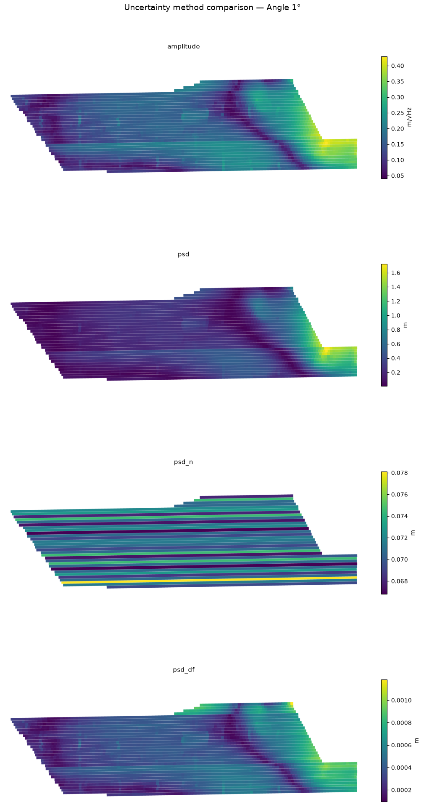
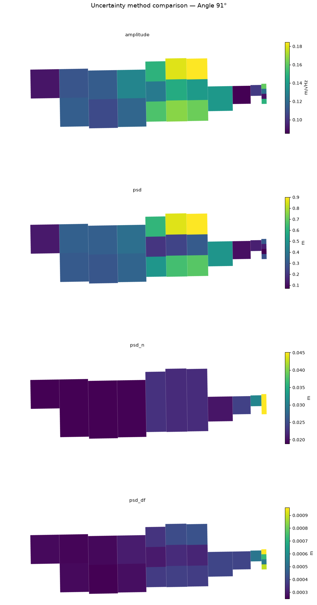
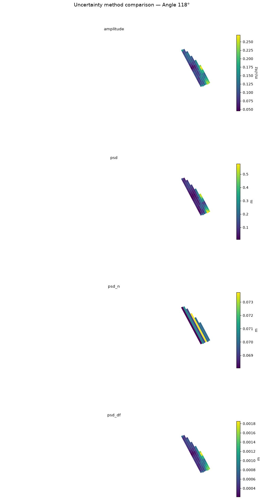